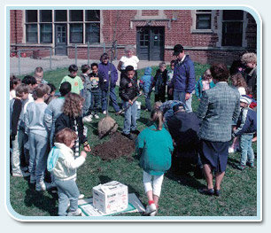
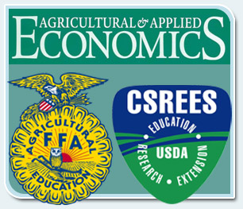
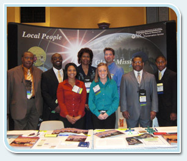
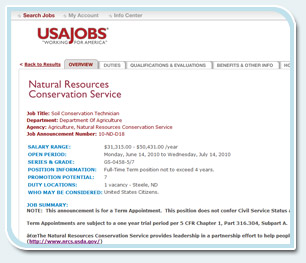
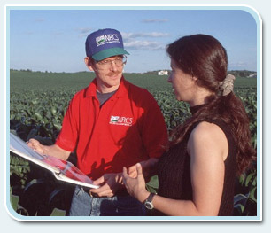

<!DOCTYPE html PUBLIC "-//W3C//DTD XHTML 1.0 Transitional//EN" "http://www.w3.org/TR/xhtml1/DTD/xhtml1-transitional.dtd">
<html xmlns="http://www.w3.org/1999/xhtml">
<head>
<meta http-equiv="Content-Type" content="text/html; charset=utf-8" />
<title>Popup Information</title>
<link href="../../styles/pop_nrcs.css" rel="stylesheet" type="text/css" />
<script language="JavaScript" type="text/JavaScript" src="../../scripts/usda_nrcs.js"></script>
<script type="text/javascript">
var iTerm = getQueryValue('popterm')

var arrPopup = new Array();
var numTerm = 7;
for (var i=0; i<numTerm; i++) {
	arrPopup[i] = [];
}


arrPopup[0][0]  = "<p class='popupTitle'>School and Campus Relationships</p>";
arrPopup[0][1]  = "<div align='center'></div><p>Colleges, universities, and even high schools with agriculture or conservation science programs are excellent sources of highly-skilled candidates.  Many NRCS employees got their start through student or internship programs.  Schools can be a single, consistent pipeline for qualified candidates; therefore, it's important to maintain a presence on campuses with programs relevant to NRCS' mission.  Here are some suggestions for using school and campus relationships as part of your focused recruiting efforts:</p><ul><li>Establish working relationships with the faculty of engineering and agricultural programs; offer to perform demonstrations or lead a guest lecture.</li><li>Market the various student and internship programs to students as well as career placement advisors or counselors.</li><li>Target schools or student organizations with an agricultural, natural resource, or conservation focus.</li><li>Build partnerships with schools with diverse populations.</li><li>Invite professors to work summers at NRCS.</li><li>Attend school-sponsored career fairs or events.</li></ul><br /><p>Schools and colleges are good sources of candidates for entry-level and internship positions, or positions that have an education requirement.  Also, professors and graduate students may qualify for higher-level positions.</p><p>When thinking about developing relationships with schools, institutions of higher education are obviously a high priority.  However, you can begin planting the seeds of a career in conservation by participating in events at or talking to classes at elementary, middle, or high schools as well!</p>";

arrPopup[1][0]  = "<p class='popupTitle'>Community Event Participation or Sponsorship</p>"
arrPopup[1][1]  = "<div align='center'></div><p>Because NRCS works with private land-owners, you want to operate as part of the community.  A good way to raise awareness about NRCS is to attend community events, especially agriculture-related events such as farmers markets or Arbor Day tree-planting ceremonies.</p><p>Staying involved with the community helps you understand how best to build a representative workforce in that area, gives you a sense of the skills and interests of community members, and promotes the idea of NRCS as a Best Place to Work.  Using these opportunities for informal recruiting helps build a long-term pipeline of potential employees.</p>";

arrPopup[2][0]  = "<p class='popupTitle'>Professional Organizations and Societies</p>"
arrPopup[2][1]  = "<div align='center'></div><p>There are many organizations and societies related to agriculture or conservation.  Establishing relationships with these organizations can help raise awareness about NRCS and its mission and serve as an avenue for potential applicants.  Some examples of organizations or societies in which you should participate are:</p><ul><li>Agricultural and Applied Economics Association</li><li>Association of Women Soil Scientists</li><li>Envirothon</li><li>Future Farmers of America</li><li>National Association of State Departments of Agriculture</li><li>SWCS - Soil and Water Conservation Society</li><li>Society of American Foresters</li><li>Society for Range Management</li></ul><br /><p>By focusing recruiting efforts toward these kinds of organizations, you are more likely to find the candidates whose passions are conservation and agriculture, and who have the necessary skills.  With certain organizations and societies, you can also target underrepresented groups.</p>";

arrPopup[3][0]  = "<p class='popupTitle'>City Job Centers and Employment Offices</p>"
arrPopup[3][1]  = "<div align='center'></div><p>Depending on the availability of personnel in your area, job centers and employment offices are likely to be good sources of temporary or administrative personnel.  Getting to know the staff at these employment centers will help them think of NRCS as a potential job source when individuals come in looking for work.  Posting vacancies for specific positions at a job center or employment office can provide a direct link to individuals with a distinct skill set or interest.</p>";

arrPopup[4][0]  = "<p class='popupTitle'>Career Fairs</p>"
arrPopup[4][1]  = "<div align='center'></div><p>Career or job fairs, whether associated with a school, a city, or a professional organization, are the most commonly-known venues for recruiting efforts.  Career fairs may have a broad focus—any employer may attend—or be narrowly focused on a particular industry or segment of the population.</p><p>Your choice to attend a career fair will be largely based on the type of audience the event intends to attract.  General career fairs are good choices when looking to cast a wide net for a broad range of potential candidates.  Narrowly-focused job fairs are preferred when looking for specific positions, students, or underrepresented groups.  And no matter what kind of career fair you are attending, it's always an excellent opportunity to raise awareness about NRCS and continue to build that pipeline.</p><p>Remember that job fairs do not generally offer time to effectively screen candidates.  Whenever possible, if a job fair is being held on campus, try to schedule some classroom visits that day, either before or after the job fair. This will give students the opportunity to learn more about NRCS, and you can learn more about the student population.</p>";

arrPopup[5][0]  = "<p class='popupTitle'>Vacancy Announcements</p>"
arrPopup[5][1]  = "<div align='center'></div><p>Vacancy announcements, whether online or in printed materials, are the best way to reach a large or varied population of potential applicants.  They're also effective for reaching a geographically dispersed area.<p></p>Typically, vacancy announcements for NRCS are on USAJobs.gov.  However, if you are having a difficult time filling a particular position, consider posting the announcement in other places.  For instance, you could post the position to college alumni sites.  Posting to these sites is often free.</p>";

arrPopup[6][0]  = "<p class='popupTitle'>Unplanned Opportunities</p>"
arrPopup[6][1]  = "<div align='center'></div><p>Don't forget, you engage in recruiting activities any time you converse with someone about what you do at NRCS.  This means that you may have any number of unplanned opportunities to spread the word about the agency's mission, and even potentially encourage someone to begin a career with NRCS.<p></p>Such opportunities may arise in any situation, such as at a restaurant, on a plane, at church or community gatherings, or during the course of your daily responsibilities, like going door-to-door to talk about the flooding issues in your community.  Remember, this is exactly the kind of situation for which your elevator speech was created!</p>";

</script>

</head>

<body>
<div id ="popupContent">

</div>
<script language="javascript" type="text/javascript" >
	document.getElementById('popupContent').innerHTML = arrPopup[iTerm-1][0]+"<div id='poptext'>"+arrPopup[iTerm-1][1]+"</div>";
</script>
</body>
</html>
